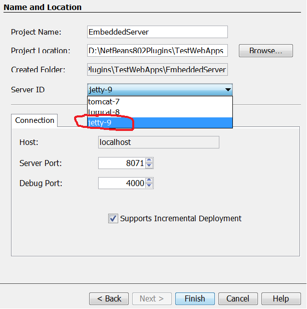

Choose
File -> New Project from the main menu.
Select the
Java category, then select
Embedded Server.
Click
Next.

Provide the
name and
location of the new
Embedded Server Project.
Select an item "
jetty-9" in the combo box which is
labeled as
Server ID.
Change, if necessary, the HTTP server port and debug port.
Press
Finish.